Night-time autonomous upkeep夜間の自律保守
While people sleep, agents check systems, fix small issues and leave a clear report for the morning.人が寝ている間に、エージェントが点検・小さな修正を行い、朝には分かりやすい報告を残します。
For the National AI Office · Rwandaルワンダ国家AI庁の皆さまへ
I run a 60-person, fully remote advertising company with a family of AI agents that remember, review each other, and finish work on their own. I want to bring that operating model to Rwanda's public sector. 約60名・完全リモートの広告会社を、記憶を持ち、互いにレビューし、最後まで自走するAIエージェントのチームと一緒に経営しています。この運用のかたちを、ルワンダの行政の現場へ持ち込みたいと考えています。
Background: AI-generated image of Rwandan hills背景：AI生成のルワンダの丘の画像
01 · Profileプロフィール
Founder & CEO, re;plus asia株式会社re;plus asia 代表
re;plus asia is a performance-advertising company of about 60 people, working fully remote and delivering to clients in 13 countries. We are one of 38 companies trading directly with Meta Japan. Next year I am moving our base to Rwanda. re;plus asia は約60名・完全リモートの運用型広告の会社で、13か国に納品しています。Meta Japan と直接取引する38社のうちの1社です。来年、拠点をルワンダへ移す予定です。
Fully remote · 13 countries完全リモート・13か国 Meta Japan direct partner (1 of 38)Meta Japan 直取引38社の1社 Relocating to Rwanda next year来年ルワンダへ拠点移転
¥3.6B (≈ RWF 33B) → ¥5.0B (≈ RWF 46B) → ~¥8.0B (≈ RWF 74B)36億円（≈ 約333億RWF）→ 50億円（≈ 約463億RWF）→ 約80億円（≈ 約740億RWF）
* RWF amounts are approximate, converted at ¥1 ≈ RWF 9.26 (October 2026).RWF の金額は概算です。換算レート：1円 ≈ 9.26 RWF（2026年10月時点）。
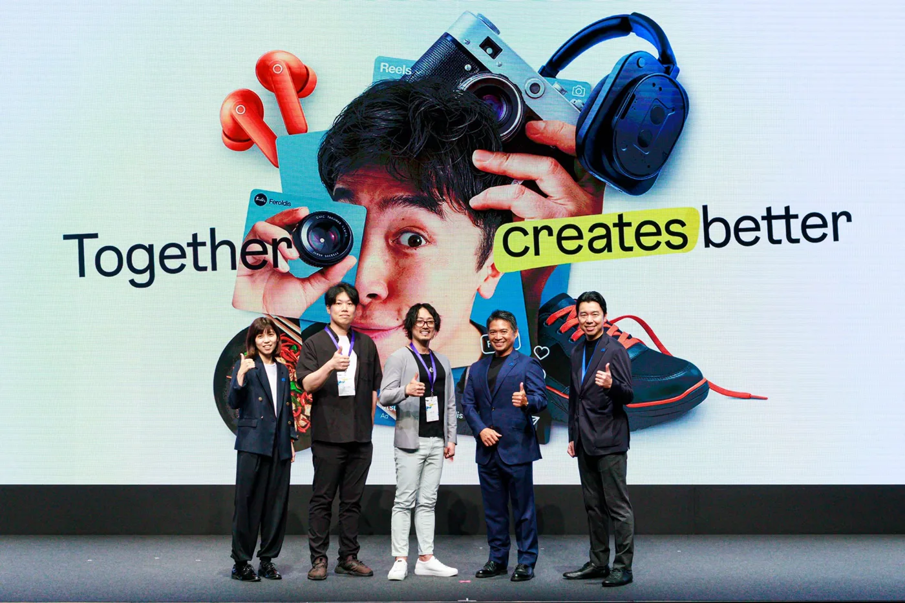
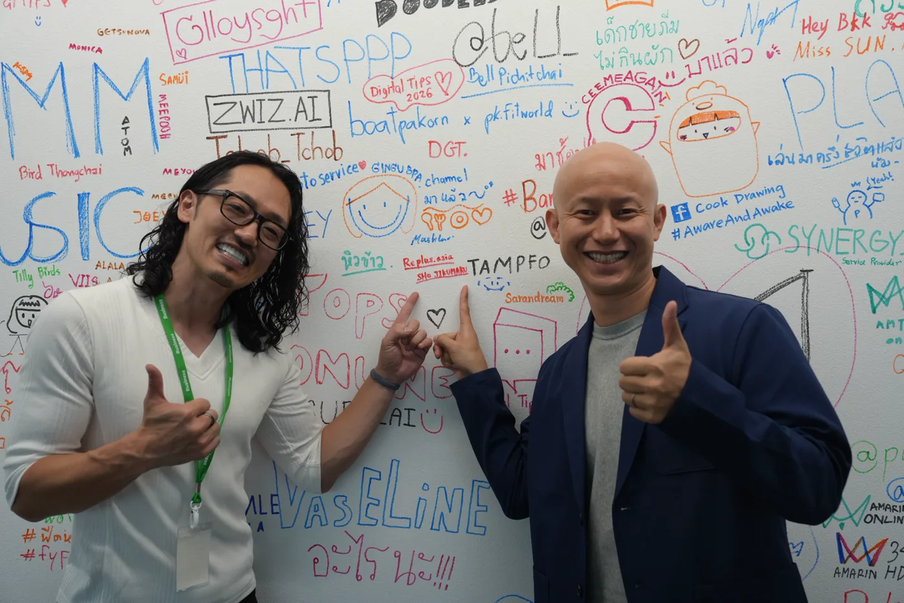
02 · The AI FamilyAIファミリー
While people sleep, agents check systems, fix small issues and leave a clear report for the morning.人が寝ている間に、エージェントが点検・小さな修正を行い、朝には分かりやすい報告を残します。
Work written by one AI is checked by AIs from different vendors. No one approves their own work.あるAIが書いたものを、別の会社のAIが確認します。自分の仕事を自分で承認しない仕組みです。
Agents plan, build, test and verify — and stop to ask a human before anything irreversible.計画・実装・テスト・検証まで自分で進め、取り消せない操作の前では必ず人に確認します。
03 · Stateful AIステートフルAI
Most AI forgets everything when the chat ends. Ours keeps decisions, context and lessons — so a team of AI staff can pick up tomorrow where it stopped today. We publish the building blocks as open source (MIT).多くのAIは会話が終わると全部忘れます。私たちのAIは、決めたこと・文脈・学びを持ち越すので、AIの職員チームが「昨日の続き」から仕事を始められます。その部品はオープンソース（MIT）で公開しています。
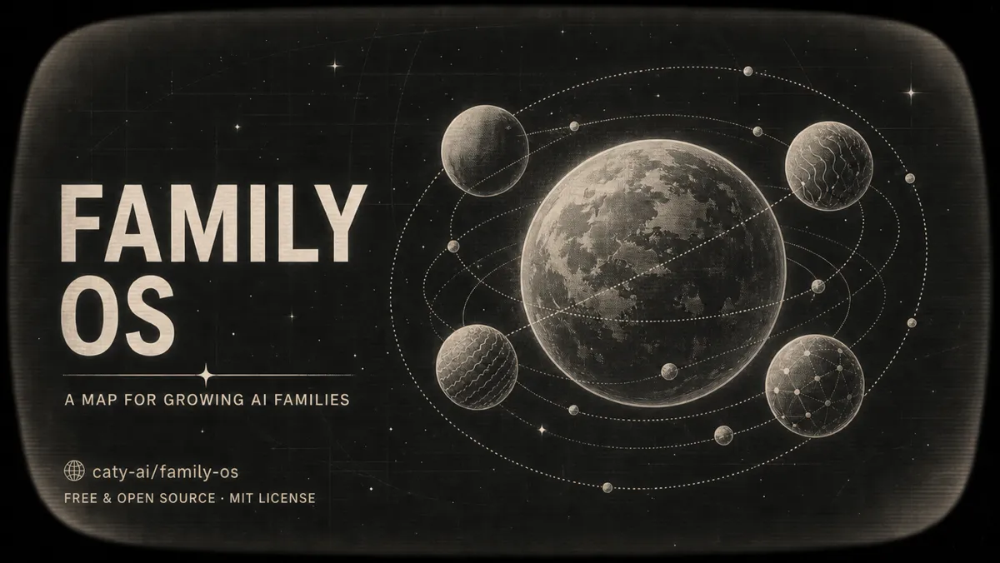
The map of how an AI family is organised and grows.AIファミリーを育てるための全体地図。
github.com/caty-ai/family-os ↗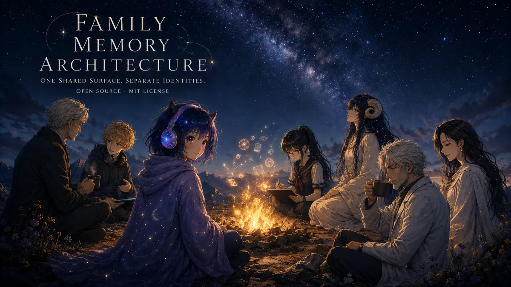
Shared memory for many agents — one write path, sources always recorded.複数のAIが共有する記憶。書き込み口はひとつ、出どころを必ず記録。
github.com/caty-ai/family-memory-architecture ↗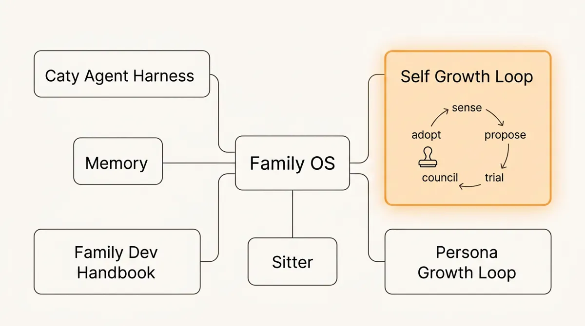
Agents learn new skills safely: propose → owner approves → trial → review → adopt.AIが安全に成長する流れ：提案→承認→試行→レビュー→採用。
github.com/caty-ai/self-growth-loop ↗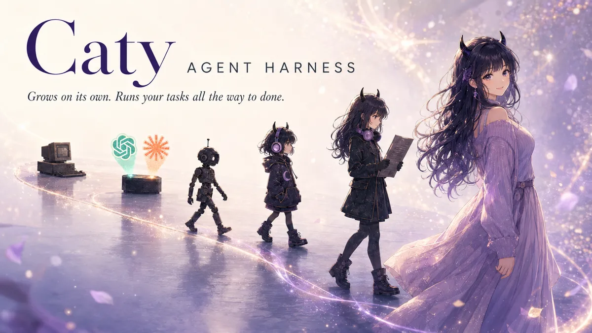
Learns from failures and drives each task to a verified finish.失敗から学び、タスクを「検証済みの完了」まで運ぶ仕組み。
github.com/caty-ai/caty-agent-harness ↗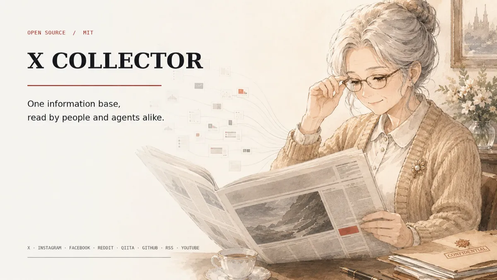
Collects AI news from 7 platform families into a daily paper for people and a feed for agents.7系統のサービスからAIニュースを集め、人向けの日刊紙とAI向けのフィードにします。
github.com/caty-ai/x-collector ↗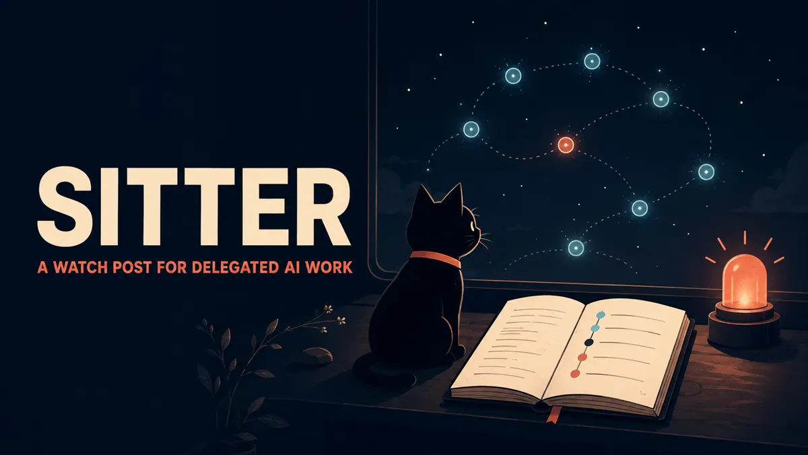
Watches long-running AI jobs, restarts them safely, and calls a human when needed.長時間動くAIの仕事を見守り、安全に再起動し、必要な時だけ人を呼びます。
github.com/caty-ai/sitter ↗04 · Productsプロダクト
Call your own AI agent with your voice — hands-free, like calling a colleague.自分のAIエージェントに声で電話する。同僚に電話するように、手を使わずに。
caty.talk ↗Bring your own AI agent into Google Meet and Zoom as a real voice participant.自分のAIエージェントを、Google Meet や Zoom に声で参加するメンバーとして呼べます。
github.com/caty-ai/meetmate ↗05 · Selected work制作実績
A 69-second tourism-and-culture film produced end-to-end with AI: script, visuals, narration and music.台本・映像・ナレーション・音楽まで、AIで一貫制作した69秒の観光・文化プロモ動画。
Landscapes are AI-generated風景はAI生成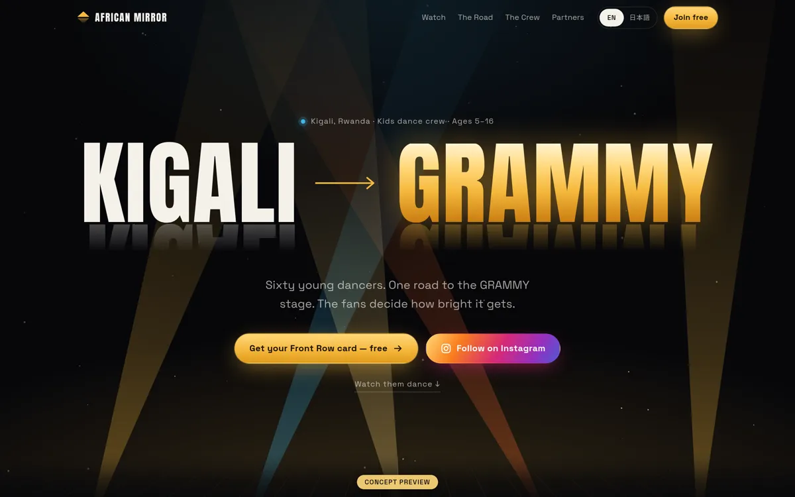
A bilingual fan-club site for a Kigali kids' dance crew on its road to a global stage.世界の舞台を目指すキガリの子どもダンスチームの、2言語ファンクラブサイト。
Open the site ↗サイトを開く ↗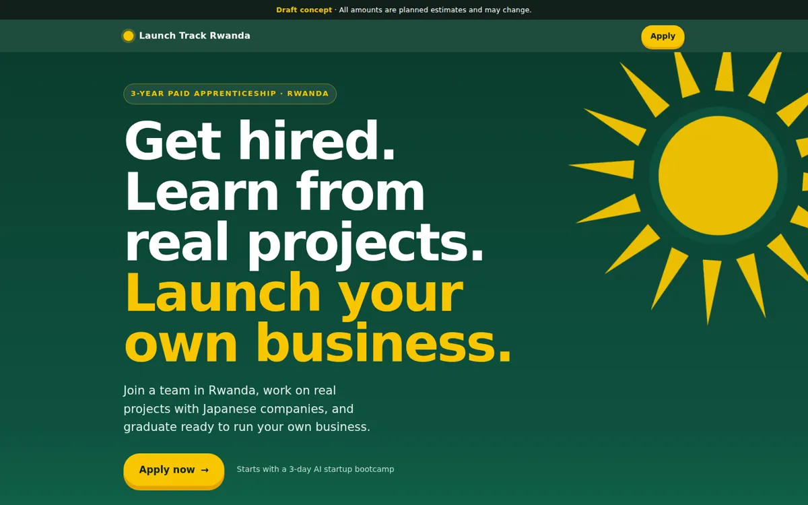
A mobile-first page for a paid apprenticeship that trains young people in Rwanda through real projects.実案件を通じてルワンダの若者を育てる有給アプレンティス制度の、スマホ優先の求人ページ。
Open the page ↗ · Draft conceptページを開く ↗・企画案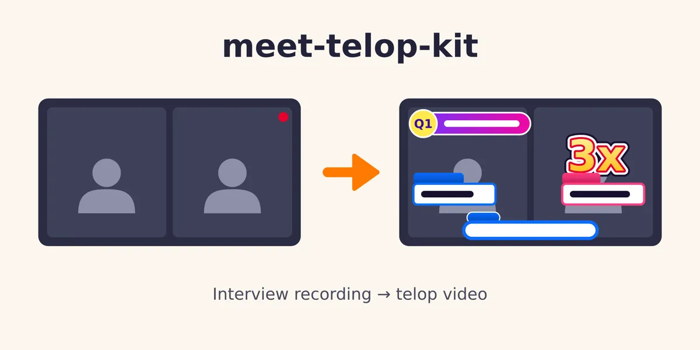
Turns a recorded video interview into a captioned, ad-ready cut — in the cloud, with an AI agent.オンライン面談の録画を、AIエージェントがクラウド上でテロップ付きの広告動画に仕上げます。
github.com/shojikumaru/meet-telop-kit ↗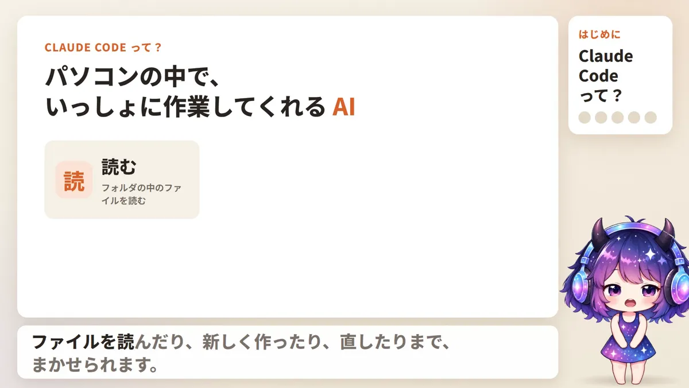
Training videos presented by our AI character Caty, with her own voice — produced on an automated video line.AIキャラクター「Caty」が自分の声で案内する研修動画。自動の制作ラインで作っています。
06 · What we can do in Rwandaルワンダでできること
We place a small team of stateful AI agents on one real workflow in your office. They remember cases and decisions, are reviewed across models, and report daily. At day 90 you decide with the numbers in hand.実際の業務ひとつに、記憶を持つAIエージェントの小さなチームを配置します。案件や決定を覚え、別のモデル同士で確認し合い、毎日報告します。90日目に、数字を見て続けるかを判断いただけます。
We train Rwandan staff and young talent to run, review and improve AI agent teams themselves — so the capability stays in the country.ルワンダの職員や若い人材が、自分たちでAIエージェントのチームを動かし、確認し、改善できるように育てます。力が国内に残る形です。
AI-produced films and creative, delivered through performance advertising at scale — the work we already do for clients in 13 countries.AIで作る映像やクリエイティブを、運用型広告で大きく届けます。13か国のお客さまにすでに提供している仕事です。
07 · Contactお問い合わせ
Tell us which process you'd like AI to take on. We'll reply with a pilot outline.AIに任せてみたい業務を教えてください。パイロットの概要をお返しします。
Contact re;plus asiare;plus asia に問い合わせる